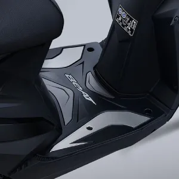
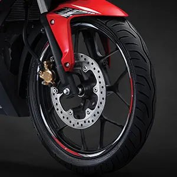

| Matic |
Gambar |
Spesifikasi |
Accessories |
| BEAD
Harga Mulai
Rp. 16,815,000
|
|
- Tipe Mesin : 4 – Langkah, SOHC, eSP
- Volume Langkah : 109.5cc
- Sistem Suplai Bahan Bakar : Injeksi (PGM-FI)
- Diameter X Langkah : 47.0 x 63.1 mm
- Tipe Tranmisi : Otomatis, V-Matic
- Rasio Kompresi : 10.0 : 1
- Daya Maksimum : 6.6 kW (9.0 PS)/7.500 rpm
- Torsi Maksimum : 9.3 N.m (0.95 kgf.m)/ 5.500 rpm
- Tipe Starter : Elektrik dan Kick Starter
- Tipe Kopling : Otomatis, Sentrifugal, Tipe Kering
|
- Rubber Step Floor (Rp. 195.000)

- Seat Cover (Rp. 155.000)
|
| DCX
Harga Mulai
Rp. 30,945,000
|
|
- Tipe Mesin : 4-Langkah, 4-Valve, eSP+
- Tipe Pendingin : Pendingin Cairan
- Volume Langkah : 156,9 cc
- Sistem Suplai Bahan Bakar : PGM-FI (Programmed Fuel Injection)
- Diameter X Langkah : 60 x 55,5 mm
- Tipe Tranmisi : V-Matic
- Rasio Kompresi : 12 : 1
- Daya Maksimum : 11,8 kW (16 PS) / 8.500 rpm
- Torsi Maksimum : 14,7 Nm (1,5 kgf.m) / 6.500 rpm
- Tipe Starter : Elektrik
- Tipe Kopling : Otomatis, Sentrifugal, Tipe Kering
|
- Smart Key (Rp. 55.000)
- Seat Cover (Rp. 195.000)
|
| Sport |
Gambar |
Spesifikasi |
Accessories |
| DBR 160K
Harga Mulai
Rp. 36,280,000
|
|
- Tipe Mesin : 4-Langkah, DOHC
- Volume Langkah : 149,16 cc
- Sistem Suplai Bahan Bakar : PGM-FI (Programmed Fuel Injection)
- Diameter X Langkah : 57,3 x 57,8 mm
- Tipe Tranmisi : Manual, 6 kecepatan
- Rasio Kompresi : 11,3 : 1
- Daya Maksimum : 12,6 kW (17,1 PS / 9.000 rpm)
- Torsi Maksimum : 14,4 Nm (1.47 kgf.m / 7.000 rpm )
- Tipe Starter : Elektrik
- Tipe Kopling : Wet
- Sistem Pendingin Mesin : Liquid Cooled with Auto Fan
- Pola Perpindahan Gigi : 1-N-2-3-4-5-6
|
- FUEL LID PAD (Rp. 120.000)
- TANK PAD (Rp. 125.000)
|
| Tonic-150R
Harga Mulai
Rp. 23,730,000
|
|
- Tipe Mesin : 4 Langkah, DOHC - 4 Katup
- Volume Langkah : 149,16 cc
- Sistem Suplai Bahan Bakar : PGM-FI (Programmed Fuel Injection)
- Diameter X Langkah : 57,3 x 57,8 mm
- Tipe Tranmisi : Manual, 6 kecepatan
- Rasio Kompresi : 11,3 : 1
- Daya Maksimum : 11.8 kW (16.0 PS) / 9,000 rpm
- Torsi Maksimum : 13.5 Nm (1.38 kgf.m) / 6,500 rpm
- Tipe Starter : Pedal & Elektrik
- Tipe Kopling : Multiple Wet Clutch Coil Spring
- Sistem Pendingin Mesin : Liquid Cooled with Auto Fan
- Pola Perpindahan Gigi : 1-N-2-3-4-5-6
|
- WHEEL LIST STICKER (Rp. 50.000)
- RADIATOR PROTECTOR (Rp. 100.000)
|
| CUB |
Gambar |
Spesifikasi |
Accessories |
| ZTR 150
Harga Mulai
Rp. 24,280,000
|

|
- Tipe Mesin : 4-Langkah, DOHC
- Volume Langkah : 149,16 cc
- Sistem Suplai Bahan Bakar : PGM-FI (Programmed Fuel Injection)
- Diameter X Langkah : 57,3 x 57,8 mm
- Tipe Tranmisi : Manual, 6 kecepatan
- Rasio Kompresi : 11,3 : 1
- Daya Maksimum : 12,6 kW (17,1 PS / 9.000 rpm)
- Torsi Maksimum : 14,4 Nm (1.47 kgf.m / 7.000 rpm )
- Tipe Starter : Elektrik
- Tipe Kopling : Wet
- Sistem Pendingin Mesin : Liquid Cooled with Auto Fan
- Pola Perpindahan Gigi : 1-N-2-3-4-5-6
|
- ENGINE PROTECTOR (Rp. 155.000)
- WHEEL STICKER (Rp. 55.000)

|
| ZEVO X
Harga Mulai
Rp. 15,210,000
|

|
- Tipe Mesin : SOHC, 4 Langkah, SOHC, Silinder Tunggal
- Volume Langkah : 149,16 cc
- Sistem Suplai Bahan Bakar : PGM-FI (Programmed Fuel Injection)
- Diameter X Langkah : 50 x 55,6 mm
- Tipe Tranmisi : Tipe Tranmisi 4 Kecepatan
- Rasio Kompresi : 9,3:1
- Daya Maksimum : 6,56kW (8,91 PS) / 7.500 rpm
- Torsi Maksimum : 8,76 Nm (0,86 kgf.m) / 6.000 rpm
- Tipe Starter : Starter Kaki & Starter Elektrik
- Tipe Kopling : Multiplate Wet Clutch with Diaphrgam Spring
- Sistem Pendingin Mesin : Pendingin Udara
- Pola Perpindahan Gigi : N-1-2-3-4-N
|
TIDAK ADA AKSESORIS YANG TERSEDIA
|